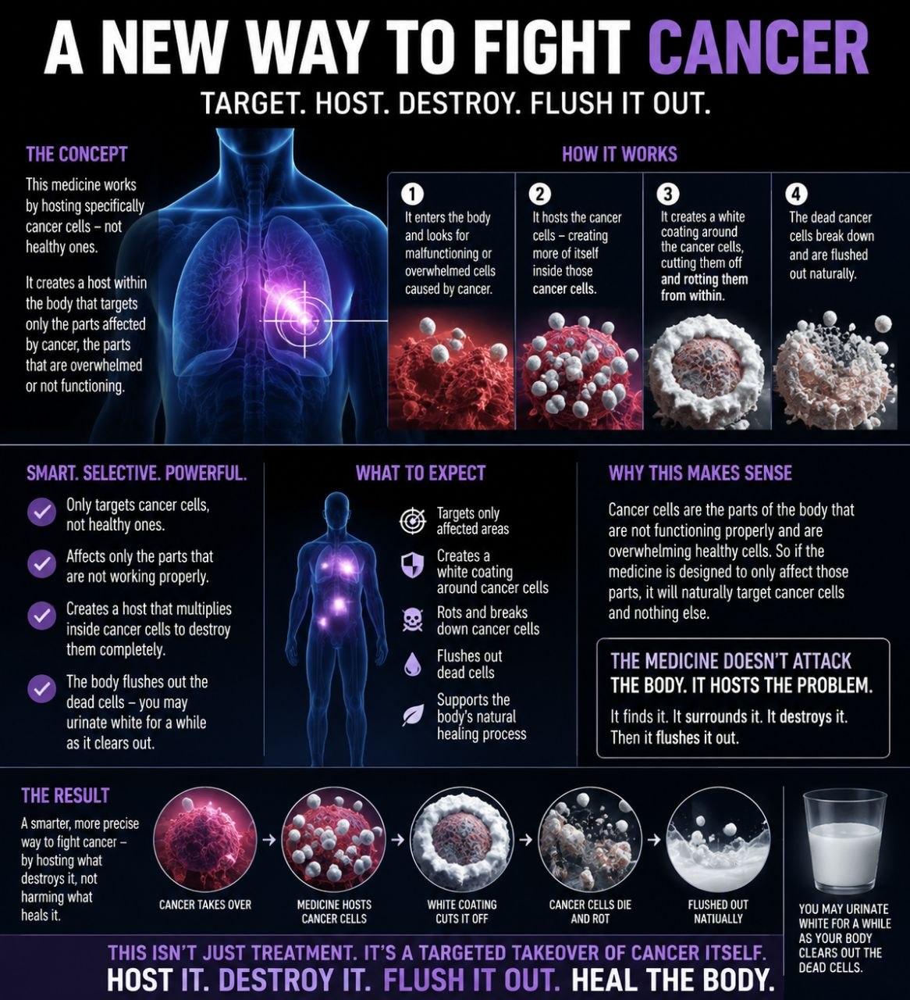
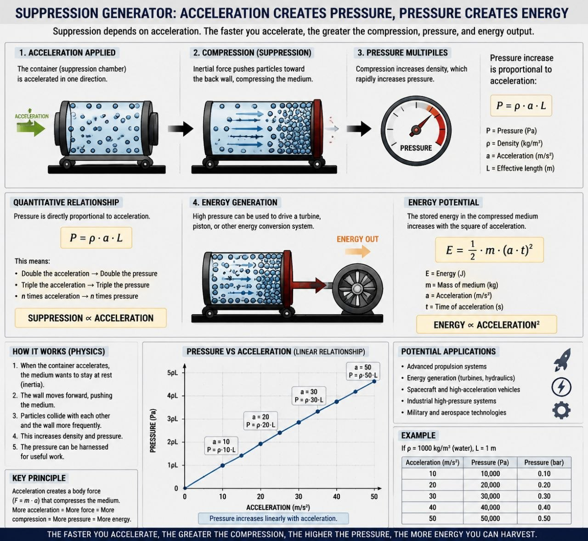
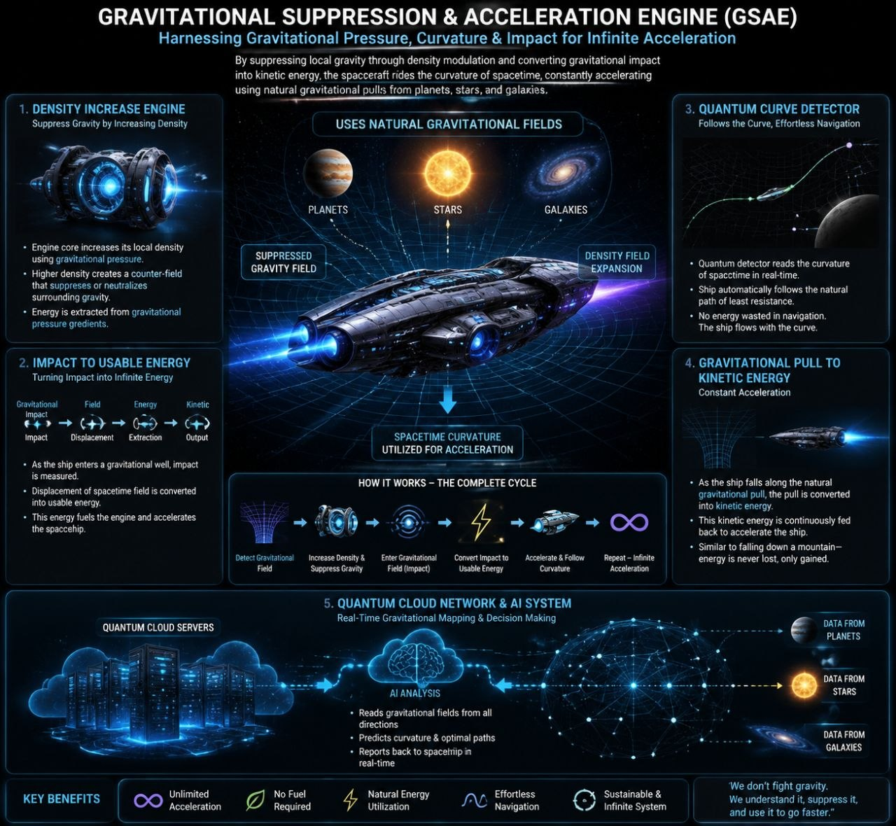

This image represents the vast interconnected structure of the universe, where galaxies and dark matter form a cosmic web stretching across unimaginable distances. It highlights the beauty and complexity of the cosmos.

Here we see a region where new stars are born from clouds of gas and dust. These stellar nurseries are the cradles of creation, giving rise to the next generation of stars and planetary systems.

This image invites us to ponder the mysteries that remain hidden in the universe. From black holes to dark energy, the cosmos is full of secrets waiting to be discovered by the new science.